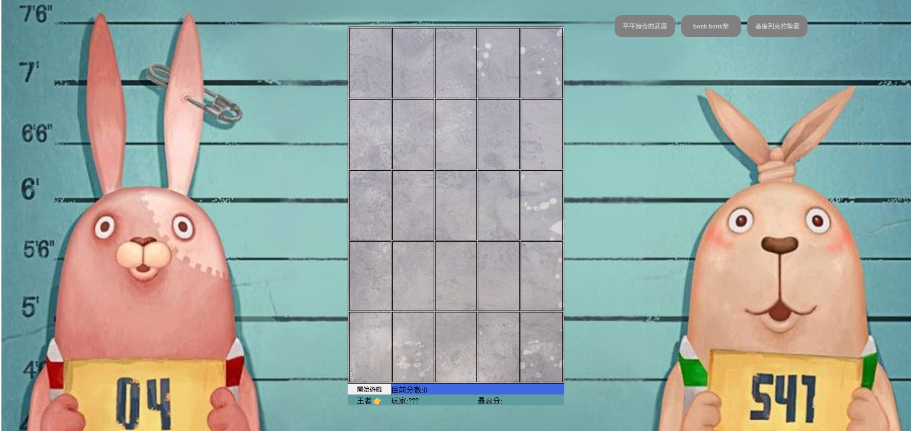

ABOUT
前端開發工程師 | 專精 Vue2 、 Vue3 | 具備 Nginx 與 SSL 維運管理的經驗
我是林佳勳，現任職於聯邦銀行（2022年至今）。負責的對外系統為行動銀行之前端開發與維運工作。除具備高還原度的介面實作能力外，亦具備 Nginx 部署與 SSL 安全配置經驗，是一位兼具金融業務知識與維運思維的開發者。
在職期間以 Vue2、Vue3 開發前端畫面、互動效果與串接後端 API 完成交易功能。
能與 UI 積極溝通設計，協調組件復用與設計優化並且預見使用者操作痛點。評估交易流程的順暢性，確保使用者能輕鬆理解，完成操作。
熟悉 RWD 與具備處理跨瀏覽器相容性的豐富經驗，能針對各裝置上的渲染差異進行微調，確保 UI 在不同作業系統下能維持一致性。
在釐清需求後能與後端工程師協作，討論 API 規格以利後續串接。
實作 Nginx 服務部署，包含反向代理設定與 SSL 憑證配置，具備 Linux CLI 基本維運能力。能獨立處理前端服務的上線佈署。
熟悉 SSL/TLS 憑證部署流程，包含產製 RSA 私鑰、生成 CSR 進行簽署申請，並能正確處理中繼憑證的合併，確保憑證鏈完整性。
持有內控、信託、保險三項金融證照，對金融方面的規範與流程有一定的認識，能有效降低與業務單位之溝通成本。
SKILL
視覺設計
- Photoshop
- Illustrator
- Figma
前端開發 Front-end
- Vue3
- Vue2
- JavaScript
- TypeScript
- jQuery
- Tailwind CSS
- Bootstrap
- HTML
- CSS
- Sass
後端開發 Back-end
- Node.js
- MongoDB
環境部署與工具 DevOps & Tools
- Linux
- Nginx
- SSL/TLS
- Git
- Render
CERTIFICATIONS
- 銀行內部控制與內部稽核測驗(一般金融)
- 信託業業務人員信託業務專業測驗
- 人身保險業務員資格測驗
PORTFOLIO
吃香喝辣 — 形象官網
設計概念
吃香喝辣是個與LINE結合的火鍋店官網，能夠讓使用者下單、候位。當訂單完成或是排到位子，便能夠透過官方機器人通知使用者。是個主打為店家與顧客省時省力的官方網站。
網站功能
前台
- LINE Bot 註冊 / 登入
- 候位系統
- 訂購 / 結帳
- 留言
後台
- 管理候位
- 管理訂單
- 管理留言
- 管理公告
- 管理商品

番茄鐘
參考他人的UI設計，以 vue-cli 開發此網站，其中用到 Pug語法、 PWA 技術、chart.js 套件。
Vue.js
Pug
BootstrapVue

LINEBOT
以 Node.js 搭配 linebot 套件，開發 linebot。 此機器人用 axios 套件串接文化部 API，主要作用為讓用戶搜尋傳統民俗活動的基本資訊。
Node.js
axios
linebot
dotenv

我是誰？
以 jQuery 語法寫出的小遊戲，遊戲內容為點擊皮卡丘的剪影。點擊後剪影的真面目是皮卡丘就加分，反之則扣分。
jQuery

十二地支與生肖
面向幼兒的益智翻牌遊戲，需要翻出十二地支與其對應的生肖才能將牌面消除，消除後會彈出關於十二地支或生肖的小知識。
jQuery

打地鼠
純 JavaScript 寫出的小遊戲，打到綠色的兔子加分、紅色兔子扣分。開局前可以換武器，能有不同的效果。總分會儲存於 localstorage ，只會顯示最高分者。
JavaScript

JS小時鐘
設計的主題是外太空小怪物，網頁上除了能看到時間還能看到當前年月日。
JavaScript

甜點店商官網
在不使用任何 UI 框架下以純 CSS 刻出 TemplateMonster 內的任一版面。
CSS

泰山咖啡莊園
Bootstrap 刻出的響應式咖啡店官網。
Bootstrap